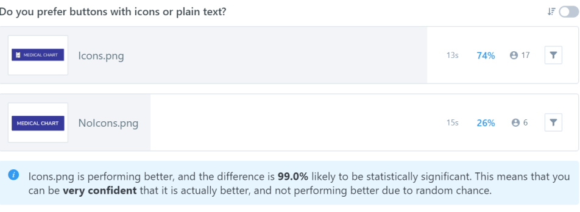

Summary:
The current healthcare market is saturated with cumbersome and incomplete patient portals. This project sought to increase the amount of available tasks a patient can complete remotely with a more intuitive and friendly interface.
Goal:
To enhance the patient/provider relationship in a way that would increase adherence to healthcare provided advice and provide a baseline to increase patient overall wellness.
Design Evolution:
a preview of the process


Problem:
There is a disconnect between providers and patients that results in avoidance, exacerbating any existing health problems and letting unknown problems go unnoticed. A platform that provides a conduit to patient/provider interaction is needed.There is no system in place to allow for supervised health maintenance.
Solution:
A patient portal that is also a wellness portal. The objective is to produce an interface that is user friendly and provides the ability to complete necessary tasks. To keep the patient informed, this portal provides medical records along with proper resources and explanations to understand the implications of the information.
Design Thinking
it's a process
→
let's begin
User Survey

The survey conducted examined various types of consumer knowledge and behavior in regards to cloud computing and patient portal use.
Opinions about cloud computing and patient portals were largely in agreement, but usage and comfort level with patient portals varied widely.
Cloud Computing Findings
95%
Rely on Cloud Computing
95%
Have Security Concerns
Patient Portal Findings
83%
Can view test results
Schedult an appt
50%
Contact doctor
Refill prescription
Access records
72%
Want portal to connect to insurance
Patient Portal reliance and comfort level
Key Takeaways

current state = discontent!
Renewed interest if:
- Features enhanced
- More user-friendly
- Integrate with other services
See the details
take me there:
User Interviews
What I learned about user needs and habits:
- Web Usage
- Integral to work, predominantly email.Varied reporting of personal use- one person was embarrassed to say.(In the future will adjust interview to gage a daily estimate)Top sites: Google and shopping sites. Social media was also high on the list, but generally limited to mobile device use.
- Health
- Priorities: work, enjoyment, family Health as a priority: dependent on age (older respondents) or if had children Fitness: All cited as a priority.. Actual degree of activity varied (goals vs action) Diet: not a consideration
- Patient Portal
- Likes
- Complete tasks remotely
- Can use anytime of day
- Dislikes
- Hard to find things
- Limited tasks available to complete
- Not a “pretty” interface
Personas & Development
How the metrics represent each persona
- Set the stage
- Name, picture, keywords and background stats
- Create a connection
- Personal quote, bio
- Highlight pain points
- Goals, frustrations
- Product in terms of fit for user
- Personality traits, comfort with tech, motivations
Key Takeaways
Why these personas?
- Angela: young, healthy- needs platform that elicits interest
- Bill: older, health problems- needs easy to use, comprehensive platform
- Robert: doctor- needs to minimize time spent on paperwork and redundancy
See the original
take me there:
Personas
Information Archtitecture
User Flows

- A user flow was drawn out for each task a user would be able to complete, ensuring the necessary path of steps would be available for task completion. Users were able to complete tasks, return to menus and access help if necessary.
Wireframes
It all started out with sketching the layout..
- Early sketches included a side tabbed navigation which was later converted to a clean top menu.
- Early sketches also included placeholders for lots of imagery that was later deemphasized to create a cleaner look and emphasize function.
The sketches were developed into wireframes in Figma and then converted to a prototype in InVision
Usability testing: wireframes
As part of usability testing I focused on the following tasks. Under each task, user performance is listed.
- What is the product? Purpose?
- Didn’t immediately identify product, needed to read further
- Signup & Login
- Quick to locate, fast completion
- Inbox: read, reply
- Fast completion
- Schedule appointment
- Fast completion, confused by display of calendar on appointment dashboard
- Refill a prescription
- Easy completion,instruction reading added time to completion
- Health vitals: add a reading, view more info
- Easy completion, positive feedback to learn more feature
- Goal Progress: record daily activity, view more info
- Time taken to adjust to novel interface
- Treatment plan: explore
- Time to read through,comprehension of features not transparent
Changes made based on performance and feedback:
- Condense interface
- Restructure goals display
- Move feedback position
Brand and Identity Development
Identity:
The branding of this product is intent on conveying a sense of security and trust. These emotions are intertwined with how the product functions as a bridge between patient and provider.
Moodboard:
The purpose is defined, but what feeling is conveyed? Vizualize it!

Moodboard Highlights:
- Interactions between doctors and patients
- Friendly and supportive tone
- General health and community
Logo Development
Initial thoughts:
Final Design
Heart represents warmth, care and connection with others
Hand shaped “U” represents individual aspect of health maintenance & the inclusion of providers and peers (universe)
Preference Testing:
Do you prefer buttons with icons or plain text?

VS


How this influenced final design:
- Icons were used in buttons.
- Based on additional feedback icons were moved to the right of the word.
- All icons adhered to outline style and button size was made uniform.
Usability testing: HiFi mockups
Usability tasks were the same as used in the wireframe testing, but the script was updated to reflect more scenario driven tasks.
- What is the product? Purpose
- Product features clearly conveyed
- Signup & Login
- Quick to locate, fast completion
- Inbox: read, reply
- Fast completion, same performance
- Schedule appointment
- Fast completion, calendar format remains an issue
- Refill a prescription
- Faster completion relying on intuitive instruction
- Health vitals: add a reading, view more info
- Easy completion, easily comprehended
- Goal Progress: record daily activity, view more info
- Similar performance, Majority enjoyed feature, one user had negative feedback
- Treatment plan: explore
- Condensed and reorganized display easier to comprehend
Changes made based on performance and feedback:
- Added a “Go” to dashboard buttons
- Revamped scheduling calendar
- Badges converted to cards
Lessons learned
- Refinement and extension of design skills
- Need to contain project growth
- Some revisions to testing scripts
- All usability testing video taped to be able to time task completion
- Test several color palettes in preference testing to ensure proper mood conveyed
- Conduct another usability test after implementing last changes
- Limit features, keep ideas in storage for future growth for the base product
Thanks for joining me on my journey!
Have questions?
Ask Me